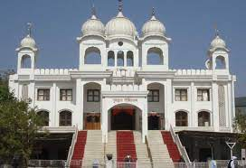
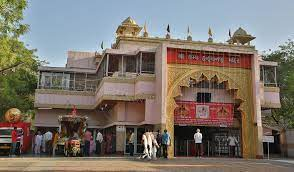
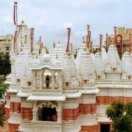
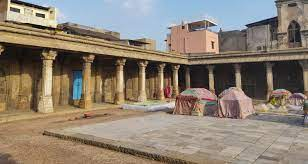

|
Nearest Metro Station: Paldi Address: Sargam Marg, Vastrapur, Ahmedabad, Gujarat 380015,india Distance From Nearest Metro Station: 5.00 km Description: Indian Institute Of Management Ahmedabad is a public business school located in Ahmedabad, Gujarat, India. Established in 1961, The institute offers post-graduate diploma programmes in Management and Agri-business management, a fellowship programme and number of executive training programmes. |
 |
Nearest Metro Station: Ghee Kanta Address: Gaekwad Haveli, Gaekwad haveli Road, Raikhad, Ahmedabad, Gujarat 380001 Distance From Nearest Metro Station: 2.66 km Description: Gaekwad Haveli is a historical haveli building in Ahmedabad. It was built in 1738. It was used as a seat of Gaekwad during Maratha rule in Ahmedabad. It was later converted into barracks and arsenal under British rule. |
 |
Nearest Metro Station: Usmanpura Address: Navrangpura, Ahmedabad, Gujarat 380009, India Distance From Nearest Metro Station: 3.50 km Description: The Gujarat University is a public state university located at Ahmedabad, Gujarat, India. >The university is an affiliating university at the under-graduate level and a teaching university at the ghost graduate level. It is accredited B++ by NAAC. It was established in 23rd November 1949. |
|  |
Nearest Metro Station: Thaltej Address: Sarkhej-Gandhinagar Hwy, Thaltej, Ahmedabad, Gujarat 380054, India Distance From Nearest Metro Station: 1.00 km Description: One of the famous and popular gurudwara in ahmedabad city. Its situated on SG Highway from where your can visit the places like Vaishnodevi temple,Tirupati balaji temple, Adalaj trimandir which are nearby. This gurudwara is famous for its lungar food distributed on every sunday. |
|  |
Nearest Metro Station: Sabarmati Railway Station Address: Cantonment Area, on Airport Road, Shahibaug, Ahmedabad-380004, Gujarat, India Distance From Nearest Metro Station: 5.90 km Description: The Shree Camp Hanuman Temple is one of the biggest Hanuman temples of India. It is situated in Ahmedabad Cantonment area in Shahibaug, Ahmedabad, Gujarat, India. This temple was established by Pandit Gajanan Prasad around 100 years ago. |
 |
Nearest Metro Station: Gujarat University Address: 120,Circular Road ,University Area, Ahmedabad-380015, Gujarat, India Distance From Nearest Metro Station: 1.00 km Description: Lalbhai Dalpatbhai College of Engineering (LDCE or LD), is a state college located in Ahmedabad, Gujarat, India. It was established in 1948 by Kasturbhai Lalbhai, and is named after his father Lalbhai Dalpatbhai. |
|
Nearest Metro Station: null Address: Sarkhej-Gandhinagar Highway, Gota, Ahmedabad-382481, Gujarat, India Distance From Nearest Metro Station: 0.00 km Description: Nirma University (NU) is a multi-disciplinary university located in Ahmedabad, Gujarat, India. It functions under the aegis of the Nirma Education and Research Foundation (NERF). The Gujarat Government has granted "Centre of Excellence" status to Nirma University. | |
|  |
Nearest Metro Station: Jivraj Address: Jodhpur Village Satellite, Opp Star Bazaar Gali, Ahmedabad-380015, Gujarat, India Distance From Nearest Metro Station: 3.70 km Description: Prernatirth Jain Derasar is one of the most popular Jain Derasar(Temple) situated in Ahmedabad city. |
|  |
Nearest Metro Station: Ghee Kanta Address: Rani no Hajiro, Danapidth, Khadia, Ahmedabad, Gujarat, India Distance From Nearest Metro Station: 1.34 km Description: Rani no Hajiro, also known as mughalai Bibi's Tomb or Tombs of Ahmed Shah's Queens,it is a tomb complex near Manek Chowk,Ahmedabad |
|
Nearest Metro Station: Ghee Kanta Address: Sidi Saeed Mosque, Gheekanta, Lal Darwaja, Ahmedabad, Gujarat, India Distance From Nearest Metro Station: 1.07 km Description: The Sidi Saiyyed Mosque, popularly known as Sidi Saiyyid ni Jali locally, built in 1572–73 AD (Hijri year 980), is one of the most famous mosques of Ahmedabad, a city in the state of Gujarat, India. The mosque was built by Sidi Sayyad, a Habshi nobleman, in 1572-73. |